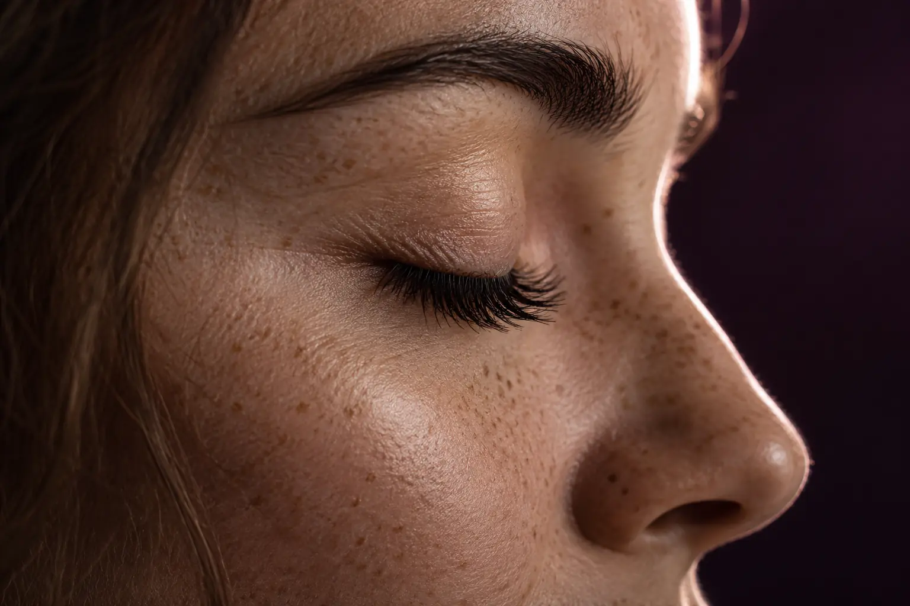

Blakstienų paslaugų gidas: dažymas, laminavimas ir priauginimas
Autorius: Madbeauty redakcija · Numatyta 2026 m. spalio 30 d. 16:00 (Lietuvos laiku)
Likusi patikra prieš publikavimą
- Plane aiškiai numatyta patikra dar neatlikta: „Blakstienų specialisto eigos review“. Reikia tikros nurodytos srities peržiūros; bendrų šaltinių skaitymas ir agento redakcinė peržiūra jos nepakeičia.
Dažymas keičia blakstienų spalvą, laminavimas formuoja natūralių blakstienų kryptį, o priauginimas prideda plaukelių. Sužinokite, kaip palyginti paslaugų apimtį ir jų derinius.

Trumpai: dažymas skirtas spalvai paryškinti, laminavimas – natūralių blakstienų krypčiai formuoti, o priauginimas – papildomiems plaukeliams pritvirtinti. Tai trys skirtingi darbo tikslai. Rinkdamiesi pradėkite nuo norimo pokyčio, tada patikrinkite, kas įeina į konkretaus teikėjo paslaugos pavadinimą.
Natūrali blakstiena ir pridedamas plaukelis
Dažymas ir laminavimas atliekami su natūraliomis blakstienomis, tačiau jų tikslai skiriasi: dažymas susijęs su spalva, o laminavimas – su blakstienų iškėlimu ar kryptimi. Priauginant prie natūralių blakstienų tvirtinami papildomi plaukeliai. Todėl priauginimo pasiūlyme gali būti svarbūs tokie dalykai kaip naujas rinkinys, jau esančio priauginimo korekcija ar nuėmimas. Gamintojo „Nouveau Lashes“ LVL aprašyme natūralių blakstienų pakėlimas ir priauginimas taip pat pateikiami kaip skirtingos paslaugos.
- Norite paryškinti natūralių blakstienų spalvą – lyginkite dažymo paslaugas.
- Norite pakeisti natūralių blakstienų krypties ar pakėlimo vaizdą – lyginkite laminavimo pasiūlymus.
- Norite papildomų plaukelių – lyginkite priauginimo paslaugas ir pasitikrinkite, ar pasiūlymas skirtas naujam rinkiniui, korekcijai ar nuėmimui.
Tai pasirinkimo orientyras, o ne vienodo rezultato pažadas: paslaugos pavadinimas pats savaime nepasako, kokia technika bus naudojama ar kaip ji atrodys konkrečiam žmogui.
Spalva ir kryptis gali būti atskiros arba derinamos
Blakstienų dažymas neapibrėžia, ar kartu bus laminuojama, o žodis „laminavimas“ negarantuoja, kad įtrauktas dažymas. 2026 m. spalio 9 d. peržiūrėtuose dviejų teikėjų meniu buvo atskirai siūlomas blakstienų dažymas ir laminavimo deriniai su dažymu arba be jo. Tai konkrečių teikėjų meniu pavyzdžiai, ne visų salonų taisyklė ar kainų ir trukmės vidurkis.
Paprastas būdas palyginti pasiūlymus – įvardyti norimą pokytį ir patikrinti, kuris darbo komponentas jį atitinka. Jei svarbi spalva, ieškokite dažymo. Jei svarbi natūralių blakstienų kryptis, klauskite apie laminavimą. Jei norite papildomų plaukelių, aiškinkitės priauginimo variantus. Jei norite kelių pokyčių, patikrinkite, ar jie įtraukti į vieną paslaugą, ar meniu pateikti kaip atskiros dalys.
Kaip palyginti paslaugos eigą ir apimtį
Vienodas ar panašus pavadinimas nebūtinai reiškia vienodą vizitą. Prieš pasirinkdami perskaitykite paslaugos aprašą ir išsiaiškinkite šiuos punktus:
- Koks pagrindinis tikslas: spalva, natūralių blakstienų kryptis ar papildomi plaukeliai?
- Ar dažymas įtrauktas, jei renkatės laminavimą, ir ar derinys pateiktas kaip viena paslauga?
- Jei renkatės priauginimą, ar aprašymas skirtas naujam rinkiniui, korekcijai, papildymui ar nuėmimui?
- Kokie priežiūros nurodymai taikomi būtent naudojamai sistemai? Prašykite konkretaus teikėjo ar gamintojo instrukcijos, nes vienos sistemos taisyklės nebūtinai tinka kitai.
Pavyzdžiui, jei norite tik ryškesnės spalvos ir nepridėti plaukelių, pradėkite nuo dažymo aprašo. Jei norite ir spalvos, ir krypties pokyčio, patikrinkite, ar siūlomas laminavimas su dažymu. Jei norite papildomų plaukelių, nevertinkite korekcijos kaip naujo rinkinio – tai gali būti atskiros paslaugos su skirtinga apimtimi.
Ką verta išsiaiškinti prieš pasirenkant
Palyginkite ne vien pavadinimą ar nuotraukoje matomą efektą, bet ir paslaugos sudėtį: kas atliekama su natūraliomis blakstienomis, ar tvirtinami papildomi plaukeliai, ar įtrauktas dažymas ir ar jūsų situacijai skirtas naujas rinkinys, korekcija ar kita paslauga. Konkreti pasiūla, eiga ir priežiūros nurodymai priklauso nuo teikėjo bei jo naudojamos sistemos, todėl juos patvirtinkite prieš registruodamiesi.
Šiame gide pateikiami kategorijų skirtumai, o ne konkrečių Madbeauty teikėjų pasiūlymai. 2026 m. spalio 9 d. peržiūrėti meniu yra pavienių teikėjų pavyzdžiai; jie nepatvirtina bendros pasiūlos ar paslaugų prieinamumo mieste.
Palyginkite procedūrų aprašus kataloge: Blakstienų laminavimas ir Priauginimas. Konkrečią darbų apimtį, kainą ir prieinamumą tikrinkite prie realaus teikėjo pasiūlymo.
Planuojamos vidinės nuorodos
Šaltiniai peržiūrai
- Leila · laminavimo ir priauginimo variantai — 2026-10-09 Leila: blakstienų laminavimas su „botox“ ir dažymu – 70 min., 40 Eur; naujas classic/nude LED/UV priauginimas – 120 min., 45 Eur; korekcija – 95 min., 35 Eur. Antakių laminavimas su korekcija be dažymo – 50 min., 32 Eur; su dažymu – 55 min., 35 Eur. Antakių ir blakstienų pasiūlymai atskiri. Meniu žyma „botox“ nepatvirtina medicininės injekcijos, LED/UV – saugumo.
- MILONA · antakiai ir blakstienos Kaune — 2026-10-09 meniu: antakių korekcija+dažymas 40 min/20 EUR, su blakstienų dažymu 50 min/26 EUR. Blakstienų/antakių laminavimo ir priauginimo deriniai rezervuoja kitą laiką. Vieno teikėjo pavyzdys, ne ekspertinė peržiūra ar vidurkis.
- Nouveau Lashes · LVL priežiūra — Nouveau LVL gamintojo puslapis skiria natūralių blakstienų pakėlimą ir priauginimą. Šioje sistemoje nurodyta pirma 24 val nešlapinti, dvi dienas vengti garų/pirties/plaukimo; tai tik LVL sistemos taisyklės, ne visų laminavimų universalus grafikas. Nenaudoti rinkodaros iki 8 savaičių kaip visiems garantuojamos trukmės.